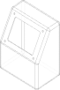

BuildSketch
BuildSketch is a python context manager that is used to create planar two dimensional
objects - objects with the property of area but not volume - that are typically
used as profiles for BuildPart operations like extrude() or
revolve().
The complete API for BuildSketch is located at the end of this section.
Basic Functionality
The following is a simple BuildSketch example:
length, radius = 40.0, 60.0
with BuildSketch() as circle_with_hole:
Circle(radius=radius)
Rectangle(width=length, height=length, mode=Mode.SUBTRACT)
The with statement creates the BuildSketch context manager with the
identifier circle_with_hole. The objects and operations that are within the
scope (i.e. indented) of this context will contribute towards the object
being created by the context manager. For BuildSketch, this object is
sketch and it’s referenced as circle_with_hole.sketch.
The first object in this example is a Circle object which is used to create
a filled circular shape on the default XY plane. The second object is a Rectangle
that is subtracted from the circle as directed by the mode=Mode.SUBTRACT parameter.
A key aspect of sketch objects is that they are all filled shapes and not just
a shape perimeter which enables combining subsequent shapes with different modes
(the valid values of Mode are ADD, SUBTRACT, INTERSECT, REPLACE,
and PRIVATE).
Sketching on other Planes
Often when designing parts one needs to build on top of other features. To facilitate
doing this BuildSketch allows one to create sketches on any Plane while allowing
the designer to work in a local X, Y coordinate system. It might be helpful to think
of what is happening with this metaphor:
When instantiating
BuildSketchone or more workplanes can be passed as parameters. These are the placement targets for the completed sketch.The designer draws on a flat “drafting table” which is
Plane.XY.Once the sketch is complete, it’s applied like a sticker to all of the workplanes passed in step 1.
As an example, let’s build the following simple control box with a display on an angled plane:
Here is the code:
with BuildPart() as controller:
# Create the side view of the controller
with BuildSketch(Plane.YZ) as profile:
with BuildLine():
Polyline((0, 0), (0, 40), (20, 80), (40, 80), (40, 0), (0, 0))
# Create a filled face from the perimeter drawing
make_face()
# Extrude to create the basis controller shape
extrude(amount=30, both=True)
# Round off all the edges
fillet(controller.edges(), radius=3)
# Hollow out the controller
offset(amount=-1, mode=Mode.SUBTRACT)
# Extract the face that will house the display
display_face = (
controller.faces()
.filter_by(GeomType.PLANE)
.filter_by_position(Axis.Z, 50, 70)[0]
)
# Create a workplane from the face
display_workplane = Plane(
origin=display_face.center(), x_dir=(1, 0, 0), z_dir=display_face.normal_at()
)
# Place the sketch directly on the controller
with BuildSketch(display_workplane) as display:
RectangleRounded(40, 30, 2)
with GridLocations(45, 35, 2, 2):
Circle(1)
# Cut the display sketch through the controller
extrude(amount=-1, mode=Mode.SUBTRACT)
The highlighted part of the code shows how a face is extracted from the design,
a workplane is constructed from this face and finally this workplane is passed
to BuildSketch as the target for the complete sketch. Notice how the
display sketch uses local coordinates for its features thus avoiding having
the user to determine how to move and rotate the sketch to get it where it
should go.
Note that BuildSketch accepts a sequence planes, faces and locations for
workplanes so creation of an explicit workplane is often not required. Being
able to work on multiple workplanes at once allows for features to be created
on multiple side of an object - say both the top and bottom - which is convenient
for symmetric parts.
Local vs. Global Sketches
In the above example the target for the sketch was not Plane.XY but a workplane
passed by the user. Internally BuildSketch is always creating the sketch
on Plane.XY which one can see by looking at the sketch_local property of your
sketch. For example, to display the local version of the display sketch from
above, one would use:
show_object(display.sketch_local, name="sketch on Plane.XY")
while the sketches as applied to their target workplanes is accessible through
the sketch property, as follows:
show_object(display.sketch, name="sketch on target workplane(s)")
When using the add() operation to add an external Face
to a sketch the face will automatically be reoriented to Plane.XY before being
combined with the sketch. As Faces don’t provide an x-direction it’s possible
that the new Face may not be oriented as expected. To reorient the Face manually
to Plane.XY one can use the to_local_coords() method as
follows:
reoriented_face = plane.to_local_coords(face)
where plane is the plane that face was constructed on.
Locating Features
Within a sketch features are positioned with Locations contexts
(see Location Context) on the current workplane(s). The following
location contexts are available within a sketch:
GridLocations: a X/Y grid of locationsHexLocations: a hex grid of locations ideal for nesting circlesLocations: a sequence of arbitrary locationsPolarLocations: locations defined by radius and angle
Generally one would specify tuples of (X, Y) values when defining locations but there are many options available to the user.
Reference
- class BuildSketch(*workplanes: ~build123d.topology.two_d.Face | ~build123d.geometry.Plane | ~build123d.geometry.Location, mode: ~build123d.build_enums.Mode = <Mode.ADD>)[source]
The BuildSketch class is a subclass of Builder for building planar 2D sketches (objects with area but not volume) from faces or lines. It has an _obj property that returns the current sketch being built. The sketch property consists of the sketch(es) applied to the input workplanes while the sketch_local attribute is the sketch constructed on Plane.XY. The class overrides the solids method of Builder since they don’t apply to lines.
Note that all sketch construction is done within sketch_local on Plane.XY. When objects are added to the sketch they must be coplanar to Plane.XY, usually handled automatically but may need user input for Edges and Wires since their construction plane isn’t always able to be determined.
- Parameters:
- property sketch
The global version of the sketch - may contain multiple sketches
- property sketch_local: Sketch | None
Get the builder’s object